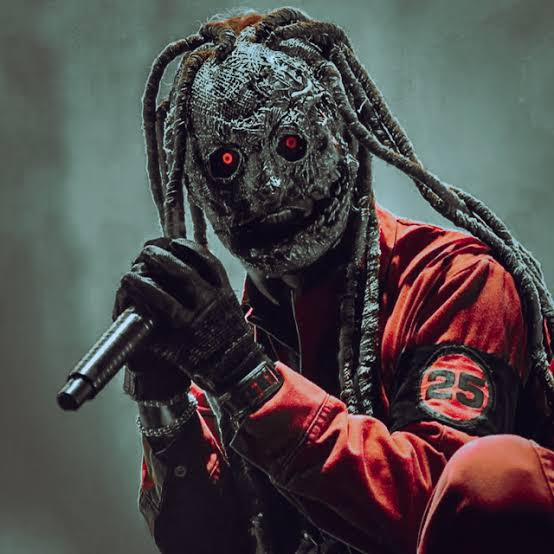
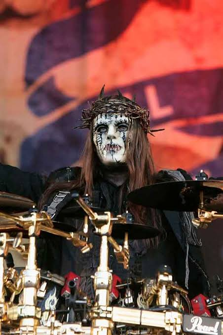
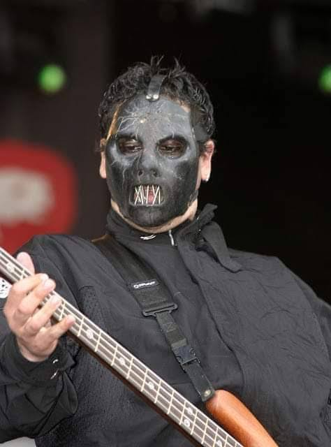
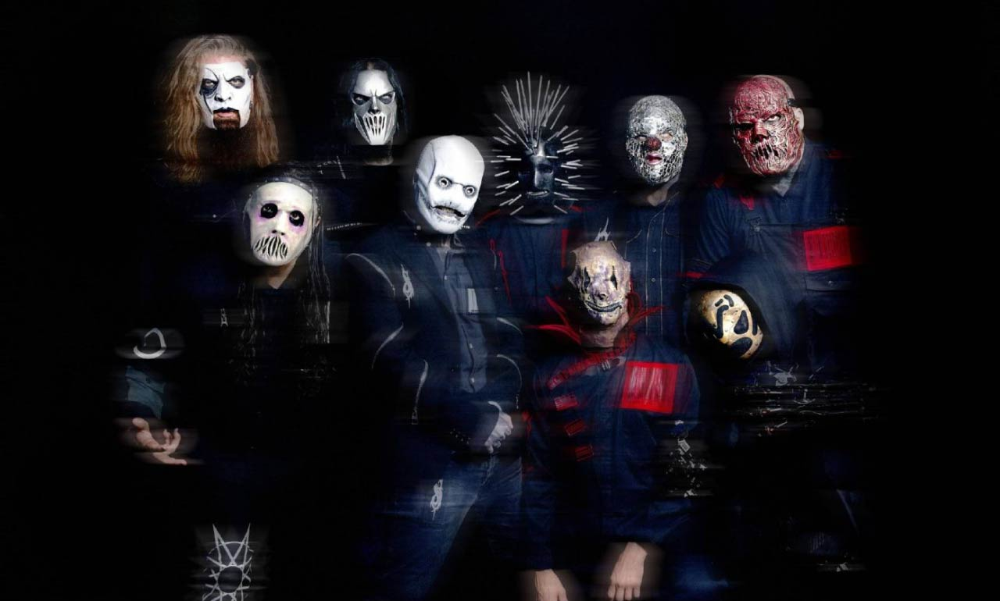
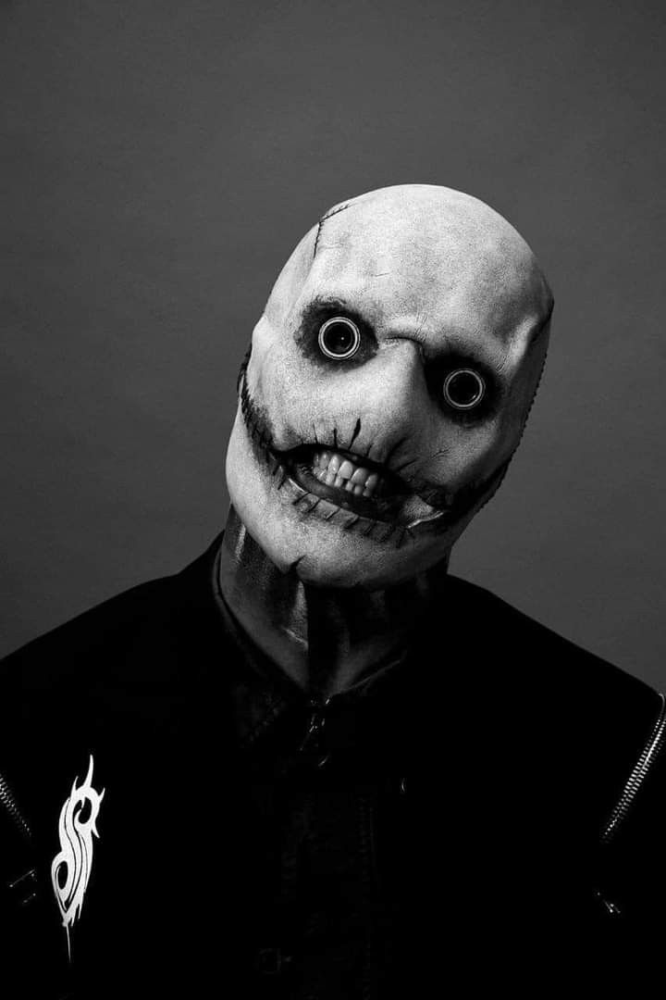
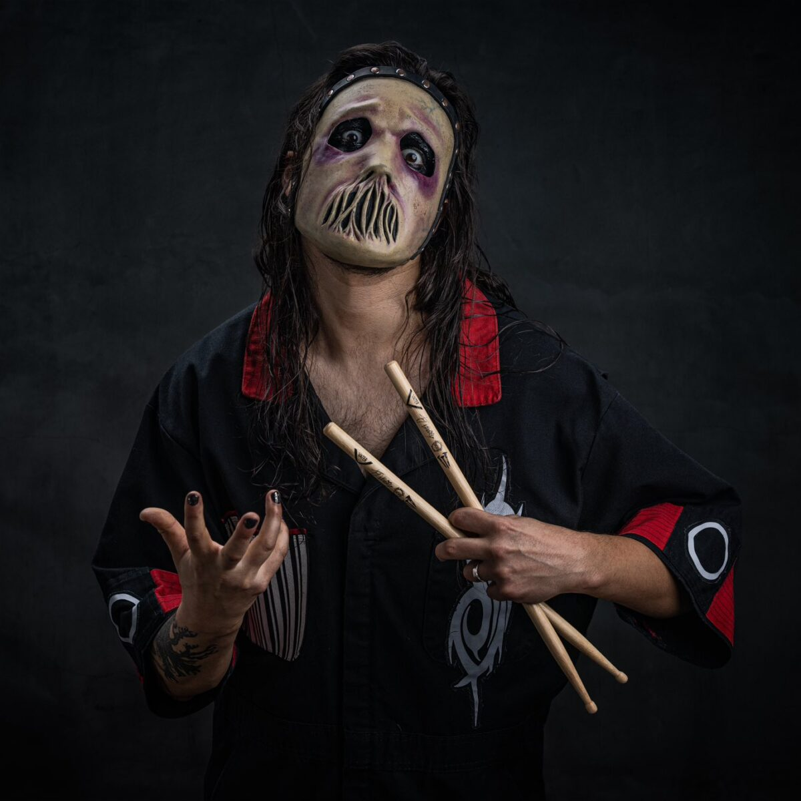
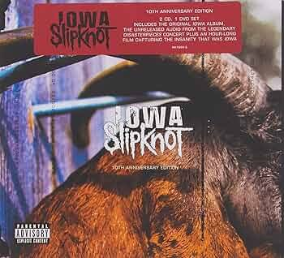

Corey Taylor (Historia de Slipknot)

Corey Todd Taylor nació en Des Moines, Iowa (1973). Antes de unirse a Slipknot tocaba en Stone Sour y trabajaba en varios oficios hasta que la banda lo incorporó como vocalista a fines de los 90. El nombre Slipknot proviene de una canción de la banda de punk Crass; el grupo adoptó la idea de la máscara y el anonimato para que la atención recaiga en la música y no en las personalidades individuales. Desde 1999, con el debut homónimo, Slipknot se convirtió en referente del metal extremo con shows violentos, percusión adicional y una estética distintiva basada en números del 0 al 9.
La Tormenta Interna: Pérdidas y Quiebres
La crisis más dura de Slipknot llegó en 2010, cuando murió el bajista y cofundador Paul Gray (#2) por una sobredosis en un hotel de Iowa. La banda continuó en su honor con All Hope Is Gone, pero años después enfrentó otra ruptura: en 2013 anunciaron la salida del baterista Joey Jordison (#1), quien años después reveló que fue despedido mientras luchaba contra una enfermedad neurológica. Esos golpes marcaron una etapa de silencio, cambios de alineación y la pregunta de si Slipknot podía seguir siendo la misma banda sin sus pilares originales.
La banda en la era Iowa y la formación actual
Tras el éxito del debut de 1999, Slipknot consolidó su formación clásica de nueve integrantes numerados, grabando Iowa (2001), su disco más oscuro y agresivo:
Formación icónica (era Iowa)





Con el tiempo llegaron Vol. 3: (The Subliminal Verses) y All Hope Is Gone. Tras las pérdidas de Gray y Jordison, la banda se reinventó con nuevos miembros y discos como .5: The Gray Chapter y We Are Not Your Kind.
Formación reciente
Slipknot mantiene el sistema de números. La alineación actual sigue liderada por Corey Taylor y Shawn Crahan, con músicos que ocuparon los puestos vacíos tras 2014:





El ascenso al estrellato (1999–2008)

Videoclip oficial de Psychosocial, uno de los temas más emblemáticos de la etapa posterior a All Hope Is Gone (2008), cuando Slipknot ya era headliner mundial.
El debut homónimo de 1999 estalló con «Wait and Bleed» y «Spit It Out». Dos años después, Iowa profundizó el sonido brutal de la banda. Con Vol. 3 y «Duality» llegaron a MTV y radios alternativas; «Before I Forget» les ganó un Grammy. Slipknot pasó de los clubs de Des Moines a los festivales más grandes del planeta.